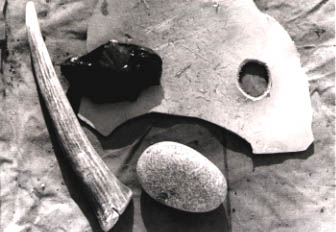

Stone tools are made from a variety of materials, that have a fine, glass-like structure, such as Obsidian, Flint, or Chert. We used Obsidian in our demonstration, but, although other materials may have some different qualities, the principle is the same. Any material suitable for flintknapping, must be able to flake when impacted. The key to controling the removal of material from a stone core is to know that a point of impact at the edge of a corner of less than 90 degrees will produce a flaking effect, and through lots of practice!
|  |
The basic tool kit for flintknapping consists of: A hammerstone for rough removal, an antler tine used as a striking tool for finer removal and for pressure flaking, a heavy piece of leather to protect against sharp fragments, and of course a corestone of suitable material.
Flintknapping is usually done in a seated position with the heavy leather draped over a knee. It is helpful to have a thumb hole located near an edge to help grasp the obsidian. It is highly recomended to also wear gloves! Obsidian flakes can be sharper than the sharpest steel razor. They can cut flesh like butter.
Obsidian is a volcanic glass. It is similar to man made glass, only sharper. It can hold an edge as thin as two microns, however, the obsidian edges wear quickly, and must be resharpened. Fortunately, obsidian is easily worked. It has a conchoidal fracture, that can produce large, usable flakes, or tiny chips for edgework.
The large flakes are produced by striking the edge of the material with the right amount of force and at the correct angle. Depending on the force, angle and proximity of the hammerstone's blow, different types of flakes can be removed. Some are long and narrow, like knife blades, and some are fan shaped. The flakes or debitage created from the production of stone implements can be useful for a variety of cutting jobs.
Obsidian is a multi purpose material. From one good corestone, a variety of different tools can be created. A large scraper might be converted into a knife, and with a little creative knapping, the knife might be turned into a projectile point, a specialized cutting tool, or a drill, etc..

|
Stone tools might be hand held, or fixed to the end of a handle, arrowshaft, etc.. When a blade becomes dulled from excessive use, the edge can be dressed up by pressure flaking. Pressure flaking creates the finely serated edges found on all sorts of stone tools.
Antlers are used either as hammers of pressure flaking tools. The pointed tip of an antler tine, against the edge of obsidian, works well to pop off tiny chips, as in the serated edge of an arrowhead or spearpoint. The blunt end of a tine, might be well suited for heavier duty pressure flaking, or it even be used as a hammer to strike of flakes. Other materials, such as bone, or wood can also be used, but antler is said to work the best.
Archaeologists study the debitage, left from stone tool production by ancient peoples, to learn about the inhabitants of an archeological site. Form the debris, archaeologists can better understand manufacturing processes and what kind of tools were made. In turn they might learn about what kinds of animals were hunted, how the tools were used, seasonal hunting cycles, and what kind of other activities might have taken place in a specific site, etc..
With this in mind, part of our flintknapping demonstration involved mapping the debitage created in our flintknapping excercise. The entire demonstration took place on a large canvas tarp marked with gridlines. This not only allowed to help contain the sharp flecks of obsidian, but it also enabled us to map out the debitage for future study.
In every grid, we catagorized, counted, and weighed the debitage. From this, and careful examination of the artifacts that we created, we learned about how the elements of an actual site might look and how to process such materials.